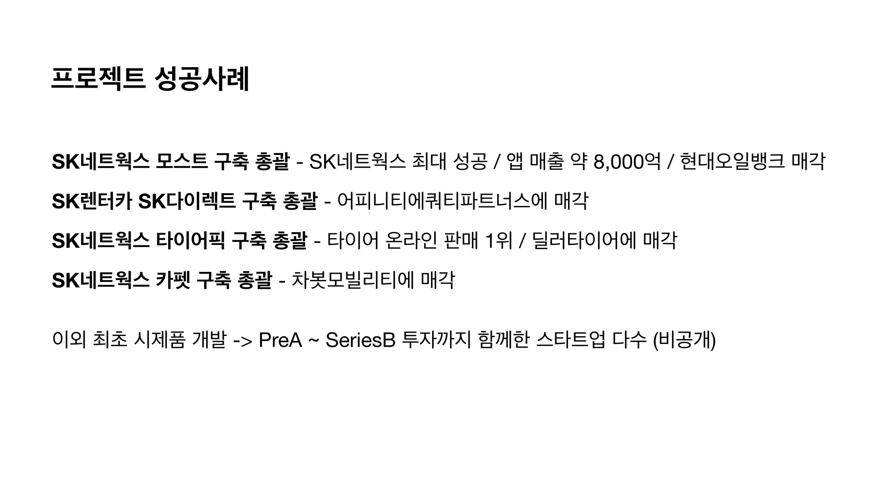

이화랑 대표는 SI 업체를 운영할 때 SK와 많은 일을 했다. 그렇게 만든 프로젝트 중 4개를 엑싯했으며, 자신이 이끌던 SI 회사와 플랫폼 회사도 매각했다. 대표인 동시에 PM이자 PO의 포지션에 있는 그로부터, 성공적인 IT 제품을 내놓는 개발론을 들어보았다.
남의 제품을 4번 엑싯시키며 배운 것들
저는 SI 회사를 운영할 때, 다양한 기업과 TF를 만들어 스타트업처럼 일하며 제품을 개발했습니다. 그렇게 일하면서 엑싯한 프로젝트만 4개로, PE, 다른 대기업, 스타트업 등으로 사업을 매각했죠. 매각과 인수인계도 함께 경험했기에, 간접적으로 4개의 엑싯을 경험했습니다.

이들 제품이 우리 회사의 소유물은 아니었지만, 그래도 높은 수준의 완성도를 가지고 있었기에 매각까지 이어졌다고 생각합니다. 그래서 오늘은 '어떻게 하면 좋은 제품을 만들 수 있는가'에 관해 이야기하겠습니다.
프로덕트, 그리고 미니 CEO로서의 PM
제 생각에 '프로덕트'는 단순한 제품, 눈에 보이는 어떤 결과물을 의미하는 것만은 아니에요. 기술, 사용자 경험, 비즈니스 전략, 고객 획득 방안까지 모두 고려한 것을 '프로덕트'라고 정의해야지만, 제대로 된 제품이 나옵니다.
여기에서 'PM'은 정말로 중요합니다. PM은 비단 프로덕트와 개발팀을 연결하는 역할이 아니에요. 저는 PM은 모든 걸 할 줄 알아야 하고, 모든 팀을 유기적으로 연결해서 제품을 만드는 사람이라 정의합니다. 그렇기에 도메인 지식은 물론, 비즈니스와, 세일즈·마케팅도 함께 알아야 합니다.
PM은 프로덕트 비전을 달성하기 위한 총괄이자 '미니 CEO'입니다.

MVP엔 '비전 달성'이 있어야 한다
많은 분들이 'MVP'를 최소한의 기능을 갖고 있는 시제품 정도로만 생각하시더라고요. 그런데 앞단에 '비전 달성'이라는 목적이 빠져있는 걸 많이 봤어요. 이게 빠져서는 MVP는 제 역할을 하지 못해요.
설사 피그마로 간단한 웹페이지 하나를 만든다 해도, '비전 달성'까지 고려해야 합니다.
예로 저희가 온라인으로 차량을 구입하는 서비스를 해본 적이 있었어요. 이때는 테슬라가 유행하기 전이었어요. 자동차를 직접 보지도 않고 결제한다는 걸 받아들이기 힘든 시점이죠. 이 문제를 어떻게 해결할 수 있을지 전략을 짜기 시작했어요.
이를 위해 저희는 '비전 달성'을 위한 발견과 실행의 이터레이션을 빠르게 돌립니다. '발견' 단계를 짧게 하기 위해 '가짜 개발'이란 걸 하는데요. 그냥 간단한 웹 페이지를 한 2시간 만에 만들어요. 거기다가 분석기를 답니다. 정교한 분석을 위해 3일 정도가 걸려요.

그리고 메타 광고를 한 30만 원만 돌려도 어느 정도 데이터는 뽑힙니다. 사람들이 실제 자동차를 온라인으로 구매할 수 있을지, 그 과정에 어떤 어려움이 있는지 AB 테스트를 진행해보는 거죠.
우리는 생각보다 잘 모른다, 디테일은 실험을 통해서만 알 수 있다
저희는 이미 알고 있는 '정답의 영역'과 우리가 잘 모르는 '미지의 영역'을 나눠보는데요. 실제 테스트를 거치면 거의 99%가 우리가 몰랐던 '미지의 영역'에 있음을 알게 돼요. 디테일하게 살필수록 그렇습니다.
예로 온라인으로 차량을 살 수 있는가 아닌가는 크게 중요하지 않아요. 하지만 렌탈은 신용 등급에 따른 캐피탈 서비스잖아요. 렌탈 비용을 1등급 기준으로 홍보하는 게 좋을지, 9등급 기준으로 홍보하는 게 좋을지도 테스트했죠.
직관적으로는 '당연히 싸게 내놓는 게 좋으니 1등급 기준으로 하자'는 의견이 많았는데요. 막상 해보니 클릭은 1등급 기준에서 더 많이 일어났지만, 가장 중요한 구매 전환은 9등급 기준에서 더 많이 일어났어요. 이런 디테일은 실험을 통해서만 알 수 있지요.

또, 일반적인 개발팀에서 말하는 '스프린트'는 PO가 백로그를 만들고 개발 태스크를 정한 다음에, 2주 단위의 이터레이션을 실행하고 스프린트 로그로 옮기는 걸 말하잖아요?
저희는 모든 백로그를 '비전 달성을 위한 가설'로 봅니다. 아까 '1등급과 9등급 중 9등급이 더 클릭이 많을 거야'라는 가설도 하나의 백로그죠. 피그마 프로토타입을 만들든, 인터뷰를 하든, 리서치를 위해 전화를 돌리든 하여, 가설을 검증하며 하나하나 해결하는 거고요.
'개발 완료'의 관점 차이
특히 하나의 회사가 일하는 게 아니라, 저희처럼 다른 기업과 함께 일하거나 할 때는 더욱 조심해야 합니다. '개발 완료'에 대한 관점이 사람들마다 다 다르거든요. CEO 입장에서는 비전, 발견, 가설 검증, 개발, 이 모든 걸 완벽하게 달성해야 '완전한 제품'이 나온다고 생각해요. 하지만 개발자는 '개발 완료'를 기획서대로 개발하고 QA까지 마친 후 배포하는 걸 의미하죠.
특히 발주를 내린 회사는 SI 회사가 개발을 마쳤다 하면 다 끝났다 생각합니다. 그래서 우리는 이렇게 설득하는 과정을 거칩니다.
우리가 개발 완료했다는 건 30%가 끝난 겁니다. 지금은 30%지만, 앞으로 J커브를 그리면서 완성이 될 거다.
다시 경험을 정리해 볼게요. 제품 개발에는 '발견 단계'와 '실행 단계'가 있는데요. 먼저 '발견 단계'는 최대한 문제될 만한 걸 먼저 찾겠다는 의미예요. 이를 위해 '프로덕트 백로그', 즉 가설 검증할 로그들을 찾아 스프린트를 돌립니다. 이걸 빠르게 여러 번 돌려서, 실행 단계 전에 웬만한 가설 검증은 다 해놓는 거죠.
그 다음 '실행 단계'에서 개발을 진행합니다. 개발이 완료되면 '비전 달성'이 되었는지 체크하고 리뷰 및 피드백합니다. 이걸 계속해서 돌리면서 개발을 완성하는 게, 제가 제품을 만드는 원칙입니다.